OPTICOS
OPTICBASIC USER MANUAL

FOR THE 48K ZX SPECTRUM
ROM v1.0.1 • Manual edition 2, November 2026 • © 2026 Optica Technology Design
OpticOS and OpticBASIC © 2026 Optica Technology Design. ZX Spectrum is a trademark of its owners; OpticOS is not connected with Sinclair Research or Amstrad. Screenshots are from the Fuse emulator.
OpticOS is a new 16K ROM for the 48K ZX Spectrum. It replaces the Sinclair ROM, and it brings its own language, OpticBASIC: a structured BASIC with named procedures and functions, block IF, CASE, WHILE, REPEAT and TRY, and no line numbers at all. Text is printed at 64 columns in a 4-pixel font, so a listing shows twice as much as on a Sinclair screen.
OpticOS keeps the parts of the Spectrum that other software relies on. The tape format is the standard one, and the ROM routines that games call, such as LD-BYTES and BEEPER, are at their usual addresses. Ordinary commercial games load with LOAD "" through a small legacy loader that understands the BASIC loader programs on their tapes.
OpticOS is a clean-room design. It contains no Sinclair, Amstrad or Tasword code or artwork, and every build is checked to make sure that no run of 12 or more bytes is shared with the original ROM.
This manual describes OpticOS and OpticBASIC exactly as they are built. Every example in it was typed into the ROM and run, and the screenshots come from the Fuse emulator with its tape traps turned off.
opticos.rom (16,384 bytes). In Fuse, start with fuse --machine 48 --rom-48 opticos.rom --no-traps to load from the real tape signal, as on a real Spectrum, or leave the tape traps on to load .tap files at once (this needs ROM v1.0.1 or later; v1.0 itself needs --no-traps). On real hardware the ROM goes in an EPROM in place of the original; this has not yet been tried.Chapters 2 to 4 cover starting up, the keyboard and screen, and typing in and editing programs. Chapter 5 describes the language, and chapter 6 is an A–Z reference of every keyword and function. Then come errors, tape, graphics and sound, machine code, and the memory map. Chapter 12 lists the limits and the differences from Sinclair BASIC, and chapter 13 has worked examples.
In syntax lines, [ ] marks something optional, | separates alternatives, and … means "more of the same". Names in italics stand for something you supply.
Switch on, and after a moment OpticOS draws its start-up screen and plays two notes: a short high one, then a longer low one. They are the BBC Micro's power-on tones played in reverse order, 523 Hz for 0.3 seconds and then 122 Hz for 0.9 seconds. The keyboard is not read while they play, so wait for the second note to finish before typing. A warm start (NEW) does not play them.
The top row is a colour bar showing the eight Spectrum colours, normal and then bright. Below it are the copyright line, OpticOS (c) 2026 Optica Technology Design, and the name and version of the BASIC. Then comes the prompt.
] followed by a space is the OpticOS prompt. Whatever you type at it is run as soon as you press ENTER:
] PRINT "Hello, world!"
Hello, world!
] PRINT 2+2, SQR 2
4 1.41421356
The prompt changes to show what ENTER will do. ] means run the line, + means add it to the program (AUTO mode), and * means put it back in place of the line being edited (chapter 4).
OpticOS ignores the keyword legends printed on the Spectrum's keys. Keywords are typed letter by letter, like any other word, and recognised when you press ENTER. Upper or lower case does not matter: print, Print and PRINT are the same, and LIST always shows keywords in capitals.
| Key | What it does |
|---|---|
| Letters and digits | Lower case. Hold CAPS SHIFT for capitals. |
| SYMBOL SHIFT + key | The red symbol on the key: " is SYMBOL+P, ; is SYMBOL+O, = is SYMBOL+L, and so on |
| CAPS SHIFT + SYMBOL SHIFT, then a key | One extra symbol: [ ] { } \ | ~ on Y, U, F, G, D, S and A |
| CAPS+5 / CAPS+8 | Move the cursor left / right in the line you are typing |
| CAPS+0 (DELETE) | Delete the character to the left of the cursor |
| CAPS+7 / CAPS+6 | Move the current-line marker up / down the program, and relist |
| CAPS+1 (EDIT) | Copy the current line into the input line; press again to empty it |
| ENTER | Run the line, or put it into the program |
| CAPS+SPACE (BREAK) | Stop a running program |
The input line holds up to 126 characters, which is two screen rows. New characters are inserted at the cursor.
The screen has 24 rows of 64 columns. Rows are numbered 0–23 from the top and columns 0–63 from the left, for PRINT AT. The font is OpticOS's own, 4 pixels wide, with true lower case and descenders. Character codes 32–127 print; code 127 is the block used as the cursor, and codes 128–255 print as ?.
There is no separate lower screen. Everything, including error messages and the prompt, appears in the main screen, which scrolls up when the bottom is reached.
Colour clash. Colours on the Spectrum belong to 8×8 pixel cells, and at 64 columns each cell holds two characters (columns 0 and 1, 2 and 3, and so on). Printing a character in a new colour recolours its neighbour too. To keep colours tidy, change colour on even-numbered columns.
An OpticBASIC program is a list of lines with no numbers. You add lines with AUTO, move about with a current-line marker, and change a line by copying it into the input line with EDIT. LIST shows the program indented to show its structure. The indentation is worked out each time and is not stored, so a program always lists tidily however you typed it.
Type AUTO. The prompt changes to +, and each line you type now goes into the program after the current line and becomes the current line, so you type a program from top to bottom. An empty line (just ENTER) ends AUTO mode.
] AUTO
+ FOR i = 1 TO 3
+ PRINT i; " squared is "; i * i
+ NEXT
+
] RUN
1 squared is 1
2 squared is 4
3 squared is 9
LIST lists the whole program, with > in front of the current line. CAPS+7 and CAPS+6 move the marker up and down one line and relist about ten lines either side of it. If you move up from the first line, the marker goes above it, and the next line you add goes at the top of the program.
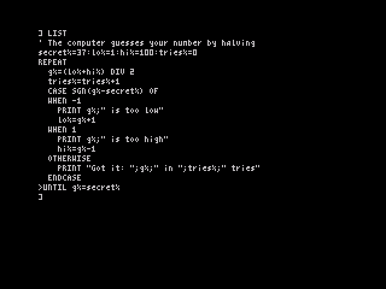
Put the marker on a line and press EDIT (CAPS+1). The line appears in the input line, without its indentation, and the prompt becomes *. Change it with the cursor keys and DELETE, and press ENTER to put it back in place of the old line.
To delete a line, put the marker on it and press EDIT twice (the second press empties the input line), then ENTER. The line before it becomes current.
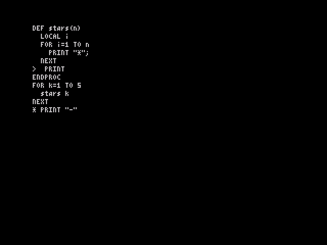
NEW deletes the program and its variables. LOAD replaces them.RUN runs the program from the top. RUN name runs just one procedure (chapter 6).Put one statement on each line. You can join statements with :, but you never need to. A comment starts with REM or ' and runs to the end of the line.
The block keywords, IF (block form), ELSEIF, ELSE, ENDIF, WHILE, WEND, REPEAT, UNTIL, CASE, WHEN, OTHERWISE, ENDCASE, TRY, CATCH, ENDTRY, DEF and ENDPROC/ENDFN, must each start a line.
A name starts with a letter, followed by letters, digits or _, up to 32 characters, all of them significant. Names are not case-sensitive. The ending says what the variable holds:
| Form | Type | Range |
|---|---|---|
count |
Number (floating point) | about ±1.7E38, 9 to 10 significant digits; whole numbers −65535 to 65535 are held exactly and work fastest |
count% |
16-bit integer | −32768 to 32767; storing a value outside this is an Overflow error |
name$ |
String | 0 to 255 characters |
a(9), b%(3,3), n$(20) |
Arrays of any type, made with DIM | up to 3 dimensions, counted from 0 |
A variable comes into being the first time something is stored in it. Using one before then is the error "No such variable".
Truth values. A comparison gives −1 for true and 0 for false, and TRUE and FALSE are −1 and 0. IF, WHILE and UNTIL treat any non-zero value as true.
Numbers can be written as 123, 1.5, 1.5E-3, in hex as $C000 or &C000, or in binary as %10110001. Strings go in double quotes; to put a quote inside a string, write it twice: "Say ""hello""".
From highest priority to lowest:
| Priority | Operators | Notes |
|---|---|---|
| 1 | ( ), functions, array subscripts |
|
| 2 | ^ |
power; 2^3^2 is 2^9 |
| 3 | unary -, +, NOT |
|
| 4 | * / DIV MOD |
/ always gives a full result, 7/2 = 3.5; DIV divides and drops the fraction, 7 DIV 2 = 3 |
| 5 | + - |
+ also joins strings: "a" + "b" = "ab" |
| 6 | << >> |
shift an integer left or right: 1 << 4 = 16 |
| 7 | = <> < > <= >= |
compare numbers, or strings in character order |
| 8 | AND |
bitwise on whole numbers |
| 9 | OR XOR |
bitwise on whole numbers |
A procedure is a named block of lines between DEF name and ENDPROC. You call it by writing its name, with any arguments after it, with or without brackets:
DEF PROC greet(who$, times%)
LOCAL i%
FOR i% = 1 TO times%
PRINT "Hello, "; who$
NEXT
ENDPROC
greet "Nathan", 2
A function returns a value with RETURN, and ends with ENDFN. A one-line function can be written DEF FN name(params) = expression:
DEF FN area(w, h)
RETURN w * h
ENDFN
DEF FN sq(n) = n * n
PRINT area(3, 4) + sq(2)
The words PROC and FN after DEF are optional, and so is FN in a call. Arguments are passed by value. Arrays cannot be passed, but every array is global, so a procedure can use one by name.
A name must not be a keyword. OpticBASIC would read DEF PROC run as the keyword RUN, so RUN stops with error 21, "Keyword as name", at that DEF line before the program starts. Choose another name, such as run_it or cosine.
LOCAL (at the start of a procedure or function) and the parameters give the procedure its own copies of those variables. The old values come back when it ends, or when an error leaves it. Procedures and functions can call themselves (recursion). The program's main part is simply the lines that are not inside a DEF.
IF condition THEN statement [ELSE statement] ' one line
IF condition ' block
…
ELSEIF condition
…
ELSE
…
ENDIF
WHILE condition … WEND ' test first
REPEAT … UNTIL condition ' test after
FOR v = first TO last [STEP s] … NEXT [v]
CASE expression OF
WHEN value [, value …]
…
OTHERWISE
…
ENDCASE
EXIT FOR | EXIT WHILE | EXIT REPEAT
TRY … CATCH … ENDTRY
CASE compares the expression with each WHEN value in turn, runs the first branch that matches (or the OTHERWISE branch), and carries on after ENDCASE. The values can be numbers or strings, but must be the same type as the expression. A WHEN branch can follow on the same line after a :.
EXIT FOR, EXIT WHILE and EXIT REPEAT leave the innermost loop of that kind, carrying on after its NEXT, WEND or UNTIL.
Every keyword and function OpticBASIC has, in alphabetical order. n, x and a stand for numeric expressions, s$ for a string expression, and v for a variable.
ABS x — The value without its sign. PRINT ABS -3 gives 3.
AND — Logical or bitwise "and". IF x > 0 AND x < 10 THEN PRINT "digit"; 6 AND 3 is 2.
ASC s$ — The character code of the first character. ASC "A" is 65.
AT — Used in PRINT: PRINT AT row, column; … (row 0–23, column 0–63).
ATN x — Arctangent, in radians. PRINT ATN 1 * 4 gives 3.14159265.
AUTO — Start adding typed lines to the program after the current line (prompt +). An empty line stops.
BEEP duration, pitch — Play a note. Duration is in seconds; pitch is in semitones above middle C (0), from about −24 to 69. BEEP 0.5, 7 plays the G above middle C for half a second.
BORDER n — Set the border colour, 0–7. BORDER 1 makes it blue.
BRIGHT 0|1|8 — Bright colours off or on for what is printed or plotted next; 8 keeps the brightness already on the screen. Also inside PRINT: PRINT BRIGHT 1; "Hi".
CALL addr — Run machine code at addr. It returns to BASIC with RET. CALL 32768
CASE x OF — Start a CASE block (chapter 5). CASE k% OF
CATCH — Starts the part of a TRY block that runs if an error happened (chapter 7).
CHR$ n — The character with code n (0–255). CHR$ 65 is "A".
CLEAR [n] — Forget all variables, open loops and procedure calls. With n, also move RAMTOP (the top of BASIC's memory) to n, leaving the memory above it free for machine code: CLEAR 59999. n must leave room for BASIC's stacks between the variables and n: 4,864 bytes on a 48K machine, 2,048 on 16K. Use CLEAR at the top level of a program, not inside a procedure.
CLS — Clear the screen to the current paper colour, and print from the top.
CODE — Used in SAVE, LOAD and VERIFY for blocks of memory (chapter 8).
COS x — Cosine of x radians.
DATA item [, item …] — Values for READ. Items can be any expressions, numbers or strings. A DATA statement must start its line. DATA "pear", 3, 2*4
DEF name[(params)] — Start a procedure (ending ENDPROC) or function (ending ENDFN). The name cannot be a keyword (error 21). DEF PROC move(dx), DEF FN half(x) = x / 2
DIM a(n [, n [, n]]) — Make an array with up to 3 dimensions, each counted from 0, so DIM a(9) has 10 elements. Numbers start as 0 and strings as "". Making the same array twice is an error. DIM board%(7,7), DIM name$(20)
DIV — Whole-number division: 17 DIV 5 is 3.
DPEEK addr — The 16-bit value at addr and addr+1, low byte first. DPEEK 23675
DPOKE addr, n — Store a 16-bit value, low byte first. DPOKE 32000, 1234
DRAW dx, dy — Draw a line from the last point plotted, dx across and dy up. DRAW TO x, y draws to an absolute position. PLOT 0,0: DRAW 255,0: DRAW TO 128,191
ELSE, ELSEIF condition — Parts of an IF block; ELSE also in a one-line IF.
END — Stop the program quietly.
ENDCASE, ENDIF, ENDTRY — End a CASE, IF or TRY block.
ENDFN, ENDPROC — End a function or procedure. ENDPROC can also be used earlier, to leave a procedure: IF l < 4 THEN ENDPROC.
ERR — The number of the last error (table in chapter 7).
ERR$ — The message of the last error. After ERROR n, msg$ it is msg$.
ERROR n [, msg$] — Cause error number n (0–255). With a message, the error report reads msg$ and ERR$ gives msg$; up to 28 characters are kept. Without a message, an error number OpticOS has no message for is reported as Error n and ERR$ is "". ERROR 200, "Out of fuel"
EXIT FOR | EXIT WHILE | EXIT REPEAT — Leave the innermost loop of that kind. IF KEY(" ") THEN EXIT FOR
EXP x — e to the power x. EXP 1 is 2.71828183.
FALSE — 0.
FLASH 0|1|8 — Flashing off or on for what is printed or plotted next; 8 keeps the flashing already on the screen. Also inside PRINT.
FN — Optional before a function's name, in DEF or in a call.
FOR v = first TO last [STEP s] — Repeat the lines up to NEXT, counting v from first to last. The loop does not run at all if first is already past last. FOR i = 10 TO 1 STEP -3 gives 10, 7, 4, 1.
FRAMES — The number of frames (fiftieths of a second) since the machine was switched on. Use it for timing: t = FRAMES: …: PRINT (FRAMES - t) / 50; " s".
FREE — The number of bytes free for variables and strings. PRINT FREE
HEX$ n — n as four hex digits. HEX$(255) is "00FF".
IF condition THEN statement [ELSE statement], or the block form (chapter 5).
IN port — Read an input port. IN 31 reads a Kempston joystick: bit 0 right, 1 left, 2 down, 3 up, 4 fire.
INK n — Set the ink colour, 0–7, for what is printed or plotted next; 8 means keep the colour already on the screen. Also inside PRINT: PRINT INK 2; "red".
INKEY$ — The key being pressed now, or "" if none. It does not wait.
INPUT ["prompt";] v [, v …] — Ask for values. Each variable gets its own line, edited with the usual keys. Numbers are read as by VAL. INPUT "Your name? "; n$
INSTR(s$, t$ [, start]) — The position of t$ in s$, from 1, or 0 if it is not there. INSTR("hello", "l") is 3; INSTR("hello", "l", 4) is 4.
INT x — The whole number at or below x. INT 2.7 is 2, INT -2.5 is −3.
INVERSE 0|1 — Swap ink and paper in text, and make PLOT and DRAW clear pixels. It stays set after a PRINT that uses it.
KEY(k$) — TRUE while the key for the first character of k$ is held down. It works for letters, digits and " " (space), and several keys can be tested at once, which suits games: IF KEY("q") AND KEY("p") THEN ….
LEFT$(s$, n) — The first n characters. LEFT$("hello", 2) is "he".
LEN s$ — The length of a string.
LET — Optional: LET x = 1 is the same as x = 1.
LIST — List the whole program, indented, with > at the current line.
LN x — Natural logarithm. LOG x — Logarithm to base 10. LOG 1000 is 3.
LOAD "name" | LOAD "" — Load a program from tape (chapter 8). LOAD "name" CODE [start] loads a block of memory.
LOCAL v [, v …] — Give a procedure or function its own copies of variables. Use it on the first lines of the procedure. LOCAL x2, y2
MAX(a, b), MIN(a, b) — The larger or smaller of two numbers.
MID$(s$, start [, n]) — n characters from position start (from 1), or the rest of the string. MID$("hello", 2, 3) is "ell".
MOD — The remainder after division: 10 MOD 3 is 1.
NEW — Delete the program and variables.
NEXT [v] — End a FOR loop.
NOT x — Logical or bitwise "not". NOT 0 is −1 (TRUE).
OF — Used in CASE.
OR, XOR — Logical or bitwise "or" and "exclusive or". 5 XOR 3 is 6.
OTHERWISE — The branch of a CASE that runs when no WHEN matches.
OUT port, n — Send a byte to an output port. OUT 254, 2 sets the border red.
OVER 0|1 — With OVER 1, text and lines are combined with what is already on the screen, so drawing twice removes them. It stays set after a PRINT that uses it.
PAPER n — Set the background colour, 0–7, for what is printed or plotted next; 8 means keep the colour already on the screen. Also inside PRINT.
PEEK addr — The byte at addr. POKE addr, n stores one.
PI — 3.14159265.
PLOT x, y — Set the pixel at x (0–255 across) and y (0–191 up from the bottom). PLOT 128, 96
PRINT [items] — Print numbers and strings. Between items, ; leaves no gap, , moves to the next 16-column zone, and ' starts a new line. A ; or , at the end stops the new line. Items can include AT r, c;, TAB(c); and the colour keywords. ? is short for PRINT. PRINT AT 5, 10; INK 6; "Score "; s%
PROC — Optional after DEF: DEF PROC name and DEF name are the same.
RANDOMIZE [n] — Start RND's sequence from n, so it repeats; with no n, from the frame counter.
READ v [, v …] — Take the next values from the DATA lines. Running out is the "Out of DATA" error.
REM — A comment; ' does the same.
REPEAT … UNTIL condition — Repeat the lines until the condition is true. They always run at least once.
RESTORE [name] — Make the next READ start again from the first DATA line, or from the first DATA line after DEF name. That lets each procedure keep its own data.
RETURN x — Leave a function, giving its value.
RIGHT$(s$, n) — The last n characters.
RND — A random number from 0 to just under 1. RND(n) — a random whole number from 1 to n. dice% = RND(6)
RUN [name] — Run the program from the start, or just the procedure name (one with no parameters), then return to the prompt. RUN clears the variables first.
SAVE "name" [AUTO proc] — Save the program to tape; with AUTO, it runs proc when it is loaded. SAVE "name" CODE start, length saves memory (chapter 8).
SGN x — −1, 0 or 1, the sign of x.
SIN x — Sine of x radians. SQR x — Square root.
STEP — Used in FOR.
STOP — Stop the program with the report "Stopped". It cannot be caught by TRY or continued.
STR$ x — A number as a string. STR$ PI is "3.14159265".
STRING$(n, s$) — s$ repeated n times. STRING$(3, "ab") is "ababab".
SWAP a, b — Exchange two variables or array elements of the same type. SWAP w$(i%), w$(i% + 1)
TAB(c) — Used in PRINT: move to column c. Note the brackets.
TAN x — Tangent of x radians.
THEN — Used in a one-line IF.
TO — Used in FOR and in DRAW TO.
TRUE — −1.
TRY — Start a TRY … CATCH … ENDTRY block (chapter 7).
UPPER$(s$) — The string in capitals. UPPER$("Mix") is "MIX".
USR addr — Run machine code at addr and give back the value of its BC register pair when it returns.
VAL s$ — The number written in a string. VAL "1.5E3" is 1500.
VERIFY — Check a tape against memory, with the same forms as LOAD.
WAIT n — Pause for n frames (fiftieths of a second). WAIT 50 waits one second.
WEND — Ends a WHILE loop.
WHEN value [, value …] — A branch of a CASE block.
WHILE condition … WEND — Repeat the lines while the condition is true. They may not run at all.
When something goes wrong in a running program, OpticOS stops it and prints a report giving the message and the position of the line, counting the first line of the program as line 1:
Division by zero, line 57
That line becomes the current line, so pressing EDIT brings it up straight away. A mistake in a line typed at the prompt gives the message alone. CAPS+SPACE (BREAK) stops a program with the report "Break".
Put lines that might fail between TRY and CATCH. If an error happens there, or in any procedure called from there, OpticOS gives up those lines and runs the lines after CATCH instead. ERR and ERR$ say what went wrong. Any LOCAL variables are restored, and unfinished loops and procedure calls are dropped, on the way out. If no error happens, the CATCH part is skipped.
ERROR n, msg$ causes an error of your own. Numbers from 100 upwards are free for your own use, and the message becomes both ERR$ and the report.
DEF FN ratio(a, b)
IF b = 0 THEN ERROR 200, "Nothing to divide by"
RETURN a / b
ENDFN
TRY
PRINT ratio(1, 0)
CATCH
PRINT "Error "; ERR; ": "; ERR$
ENDTRY
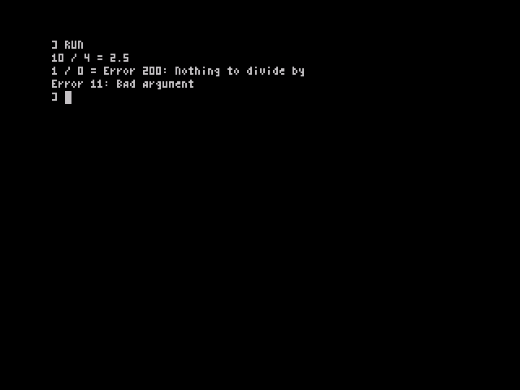
BREAK and STOP cannot be caught; they always return to the prompt.
| ERR | Message | Usual cause |
|---|---|---|
| 2 | No such variable | A variable used before anything was stored in it |
| 3 | No room | Out of memory, or calls nested too deeply (chapter 12) |
| 4 | Position off screen | PRINT AT outside 0–23, 0–63 |
| 5 | Division by zero | |
| 6 | Overflow | A number too big, or an integer variable outside −32768 to 32767 |
| 7 | Type mismatch | A string where a number was needed, or the other way round |
| 8 | Bad subscript | An array index out of range, or the wrong number of them |
| 9 | Block structure | An IF, loop, CASE, TRY or DEF without its ending, or the reverse |
| 10 | Value outside range | For example PLOT off the screen |
| 11 | Bad argument | For example SQR -1 or CHR$ 300 |
| 12 | Break | CAPS+SPACE pressed |
| 13 | Syntax error | A line OpticBASIC cannot make sense of |
| 14 | No such PROC or FN | Calling a name that has no DEF |
| 15 | NEXT but no FOR | |
| 16 | Not in a PROC or FN | ENDPROC, ENDFN or RETURN outside one |
| 17 | Stopped | STOP |
| 18 | Array already made | DIM of an array that exists |
| 19 | String over 255 | A string longer than 255 characters |
| 20 | Out of DATA | READ with no DATA left |
| 21 | Keyword as name | A DEF whose name is a keyword, such as DEF PROC run or DEF FN cos(x); reported at the DEF line when the program is RUN |
| 23 | No such stream | |
| 26 | Tape: bad or missing block | A tape error, or BREAK during LOAD |
| 65 | Legacy BASIC: unsupported statement | A Sinclair loader used something the legacy loader does not know (chapter 8) |
OpticOS uses the standard Spectrum tape signal and headers, so its tapes can be read by other tools, and tape images (.tap and .tzx) work in emulators. Emulators that load .tap files instantly do it by trapping the ROM's tape routines. ROMs from v1.0.1 on keep the layout these traps expect, and have been tested with Fuse's traps on; The Spectrum from Retro Games has not yet been retested. With v1.0, turn the traps off in Fuse (--no-traps); on The Spectrum, v1.0 crashes when loading a .tap, so try the .tzx tape, which The Spectrum's manual says it plays in real time.
| Command | What it does |
|---|---|
SAVE "name" |
Save the program. Names are up to 10 characters. |
SAVE "name" AUTO proc |
Save the program so that, once loaded, it runs the procedure proc (which must have no parameters) |
SAVE "name" CODE start, length |
Save a block of memory |
LOAD "name" or LOAD "" |
Load the named program, or the first one found. This replaces the program in memory. |
LOAD "name" CODE [start] |
Load a block of memory, at the address it was saved from or at start |
VERIFY "name" … |
Check a saved program or block against memory, with the same forms as LOAD |
To save a picture of the screen, save its memory: SAVE "pic" CODE 16384, 6912. While loading, OpticOS shows each header it finds, such as Bytes: name. BREAK stops a load.
OpticOS programs are saved with ordinary "Program:" headers, so other tools list them as BASIC programs. Their data begins with a short signature, and that is how LOAD tells an OpticBASIC program from a Sinclair one.
Almost every commercial tape starts with a short Sinclair BASIC program that loads the rest, such as:
10 BORDER 0: CLEAR 32767: LOAD ""CODE : RANDOMIZE USR 32768
When LOAD "" finds a Sinclair BASIC program, OpticOS hands it to its legacy loader, which runs the statements such loaders use: BORDER, PAPER, INK, BRIGHT, CLS, CLEAR n, POKE, RANDOMIZE USR, LOAD "" CODE and LOAD "" SCREEN$, PRINT with text and AT, REM, GO TO and RUN, with simple sums, PEEK, USR and VAL "…". That is enough for the great majority of games, which then run as on the Sinclair ROM. A loader that uses anything else stops with "Legacy BASIC: unsupported statement".
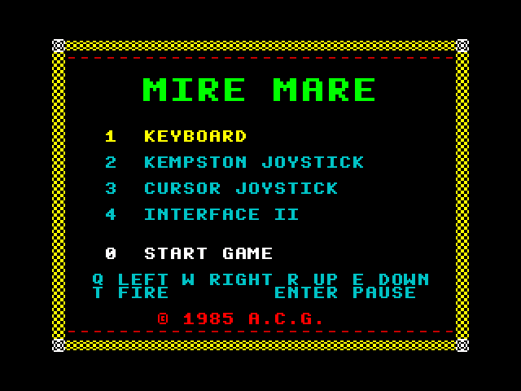
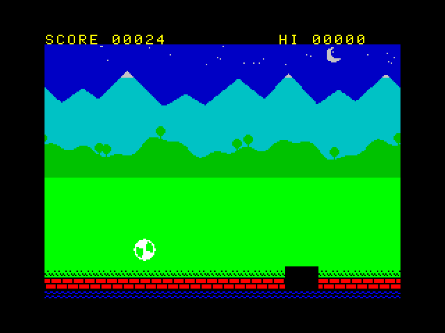
Games that call deeper into the Sinclair ROM, for example its calculator or its 8×8 font, will not work (chapter 10).
| 0 | 1 | 2 | 3 | 4 | 5 | 6 | 7 |
|---|---|---|---|---|---|---|---|
| black | blue | red | magenta | green | cyan | yellow | white |
INK, PAPER, BRIGHT and FLASH set the colours for what is printed or plotted next. Used inside a PRINT, as in PRINT INK 2; "Danger", they last only to the end of that PRINT. INVERSE and OVER stay set. The value 8 means "keep what is already on the screen": after PAPER 8, PRINT, PLOT and DRAW change the ink of each cell they touch but leave its paper as it was, and INK 8, BRIGHT 8 and FLASH 8 do the same for the other parts. BORDER sets the border. CLS clears the screen in the current paper colour.
Remember that each colour cell holds two characters (chapter 3).
The graphics screen is 256 pixels across by 192 up, with (0, 0) at the bottom left. PLOT x, y sets a pixel. DRAW dx, dy draws a straight line from the last point by the given amounts, and DRAW TO x, y draws to a given point. Each cell that a line passes through takes the current colours. With OVER 1, pixels are flipped rather than set, so drawing the same line twice rubs it out; with INVERSE 1 they are cleared.
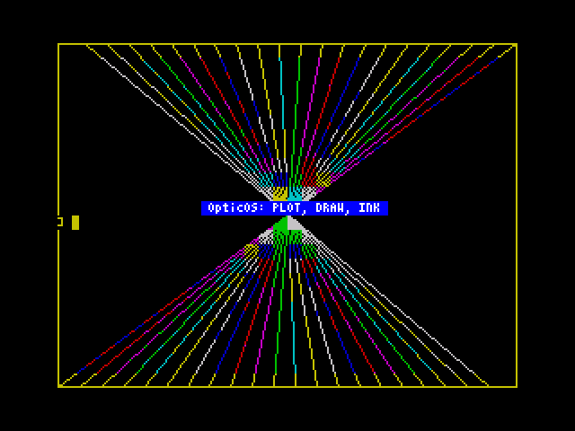
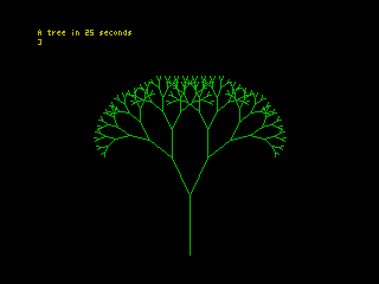
BEEP duration, pitch plays a note through the speaker: the duration in seconds and the pitch in semitones from middle C. A scale:
FOR n% = 0 TO 7
READ p%: BEEP 0.2, p%
NEXT
DATA 0, 2, 4, 5, 7, 9, 11, 12
PEEK a, POKE a, n |
Read or write one byte |
DPEEK a, DPOKE a, n |
Read or write a 16-bit word, low byte first |
IN port, OUT port, n |
Read or write an I/O port; IN 31 is a Kempston joystick |
CALL a |
Run code at a; it returns with RET |
USR a |
Run code at a, and give back BC when it returns |
CLEAR n |
Move RAMTOP down to n, keeping the memory above it safe from BASIC |
A small example, which puts LD BC,1234: RET at address 60000 and runs it:
CLEAR 59999
DATA 1, 210, 4, 201
FOR a = 60000 TO 60003: READ b: POKE a, b: NEXT
PRINT USR 60000
It prints 1234. CALL has no way to pass register values; POKE them into memory for the code to read, or use USR to get a result back.
OpticOS keeps the main ROM entry points that games and utilities call, with the usual register contracts:
| Address | Routine |
|---|---|
$0000 |
Cold start |
$0008 |
RST 8: error, with the code in the next byte |
$0010 |
RST 16: print the character in A |
$0038 |
The 50 Hz interrupt (FRAMES and the keyboard) |
$0066 |
NMI: jumps to the address in NMIADD if it is not zero |
$03B5 |
BEEPER: DE = cycles, HL = period |
$04C2 |
SA-BYTES: IX = start, DE = length, A = flag |
$0556 |
LD-BYTES: IX, DE, A = flag; carry set to load, clear to verify |
$05E3, $05E7 |
LD-EDGE-2 and LD-EDGE-1, timed to match, for custom loaders |
$0D6B, $0DAF |
CLS and CL-ALL |
$1601 |
CHAN-OPEN: A = stream |
$203C |
PR-STRING: DE = address, BC = length |
$22AA |
PIXEL-ADD: B = y, C = x; gives HL = address, A = bit |
RST $28 is not the Sinclair calculator. On OpticOS, RST $28 enters OpticOS's own floating-point routines, so machine code written for the Sinclair calculator will not work, and nor will the calculator stack routines. Other addresses in the Sinclair ROM hold different code, and nothing should rely on them. The 8×8 font at $3D00 is not there either.
| Address | Contents |
|---|---|
$0000–$3FFF |
The OpticOS ROM; the 4×8 font is at $3E80 |
$4000–$57FF |
Screen bitmap |
$5800–$5AFF |
Screen colours (attributes) |
$5B00–$5BFF |
OpticOS working space and the maths registers |
$5C00–$5CB5 |
System variables (the ones in the table below keep their Sinclair addresses) |
$5CB6–$5CCA |
Channel table |
$5CCB–$5D4F |
More OpticOS variables: name hash table, editor state; Sinclair loaders are loaded here |
$5D50–$5DCF |
The input line |
$5DD0–$5DEB |
The message of the last ERROR n, msg$ |
$5DF0 (24048) |
Start of the program, then the procedure table and the variables, growing upwards |
| … | Free memory (see FREE) |
| below the stacks | The string heap, growing downwards |
| RAMTOP − 4,864 | The typed-line buffer (256 bytes), value stack (512), control stack (2,048), machine stack (2,048); on a 16K machine 256, 512, 768 and 512 bytes, 2,048 in all |
RAMTOP ($FF57) |
The last byte BASIC uses; move it with CLEAR n |
$FF58–$FFFF |
168 bytes kept free, where Sinclair keeps its UDGs |
On a 16K machine everything from RAMTOP down is 32K lower (RAMTOP is $7F57).
These keep their Sinclair addresses and meanings:
| Address | Decimal | Name | Use |
|---|---|---|---|
$5C08 |
23560 | LAST_K | The last key pressed |
$5C09 |
23561 | REPDEL | Delay before a key repeats (frames) |
$5C0A |
23562 | REPPER | Delay between repeats |
$5C36 |
23606 | CHARS | Font address, for machine code |
$5C3A |
23610 | ERR_NR | Error code (IY points here when machine code runs) |
$5C3B |
23611 | FLAGS | Bit 5 is set when a new key is pressed |
$5C48 |
23624 | BORDCR | Border colour |
$5C4F |
23631 | CHANS | Channel table address |
$5C53 |
23635 | PROG | Start of the program: 24048 ($5DF0), or 23755 while a Sinclair loader is loaded |
$5C76 |
23670 | SEED | The last RANDOMIZE value |
$5C78 |
23672 | FRAMES | Frame counter, 3 bytes |
$5C7B |
23675 | UDG | Points to RAMTOP + 1 |
$5C7D |
23677 | COORDS | The last point plotted (x, then y) |
$5C88 |
23688 | S_POSN | Print position: column (0–63), then row |
$5C8D |
23693 | ATTR_P | The current colours |
$5C8F |
23695 | ATTR_T | Colours for the current PRINT |
$5C91 |
23697 | P_FLAG | Bit 0 OVER, bit 2 INVERSE |
$5CB0 |
23728 | NMIADD | NMI routine address (0 = none) |
$5CB2 |
23730 | RAMTOP | The top of BASIC's memory |
$5CB4 |
23732 | P_RAMT | The last byte of RAM |
The other Sinclair system variables are used for OpticOS's own purposes, so do not POKE them.
| Program size | All of free memory: about 36,000 bytes on a 48K machine with nothing else loaded, and about 6,500 on 16K |
| Line length | 126 characters typed; the stored line up to 255 bytes |
| Names | Up to 32 characters, all significant |
| Strings | Up to 255 characters |
| Arrays | Up to 3 dimensions |
| Nesting | Recursion goes deep on a 48K machine: a recursive function inside an expression about 56 calls, a procedure with one parameter about 140, and one with a LOCAL as well about 85. Beyond that the report is "No room". On 16K the stacks are smaller (about 50 for a procedure). |
| ERROR message | 28 characters |
GO TO, GO SUB, CONTINUE or LIST n. Use procedures, loops and CASE.TAB takes its column in brackets.%) variables, long names, structured blocks, procedures with parameters and LOCAL, functions of any length, TRY/CATCH, CASE, SWAP, hex and binary numbers, and DIV, MOD, XOR, <<, >> are new.RND(n) gives a whole number from 1 to n. INKEY$, KEY() and FRAMES are there for games./ and DIV differ: 7/2 is 3.5, and 7 DIV 2 is 3.DIM a(9) makes a(0) to a(9). Strings are true strings, not fixed-length character arrays.CIRCLE and arcs, user-defined graphics and block graphics (codes 128–255 print as ?), SCREEN$(), ATTR, POINT, ASN and ACS (use ATN(x / SQR(1 - x * x))), LPRINT, LLIST and COPY, CAT, MERGE, saving arrays to tape (SAVE … DATA), and the Sinclair calculator.STOP cannot be continued, and BREAK cannot be caught by TRY.These programs are in docs/manual/examples in the OpticOS repository. Each one was typed into the ROM and run, and the output shown is what the ROM printed. Type them with AUTO; the indentation does not need to be typed, because LIST puts it back.
' Times table
INK 6
PRINT "Times table for 7"
INK 7
FOR i% = 1 TO 12
PRINT TAB(2); i%; " x 7 = "; i% * 7
NEXT
The TAB(2) indents each line by two columns, and INK sets the colour of the heading.
The computer finds a number by halving the range each time, and CASE sorts out the three possible answers.
' The computer guesses your number by halving
secret% = 37: lo% = 1: hi% = 100: tries% = 0
REPEAT
g% = (lo% + hi%) DIV 2
tries% = tries% + 1
CASE SGN(g% - secret%) OF
WHEN -1
PRINT g%; " is too low"
lo% = g% + 1
WHEN 1
PRINT g%; " is too high"
hi% = g% - 1
OTHERWISE
PRINT "Got it: "; g%; " in "; tries%; " tries"
ENDCASE
UNTIL g% = secret%
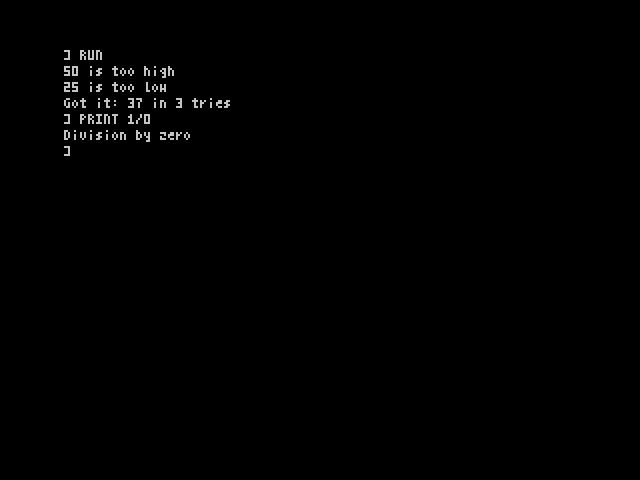
' Recursive functions
DEF FN fact(n)
IF n <= 1 THEN RETURN 1
RETURN n * fact(n - 1)
ENDFN
DEF FN sq(n) = n * n
FOR k = 0 TO 12 STEP 4
PRINT k; "! = "; fact(k)
NEXT
PRINT "9 squared = "; sq(9)
It prints 0! = 1, 4! = 24, 8! = 40320, 12! = 479001600 and 9 squared = 81.
The words are kept in DATA inside a procedure, and RESTORE words points READ at them. SWAP exchanges two neighbours that are in the wrong order, until a pass makes no changes.
' Read words, sort them, print them
DEF PROC words
DATA "pear", "apple", "fig", "banana", "cherry"
ENDPROC
DIM w$(4)
RESTORE words
FOR i% = 0 TO 4: READ w$(i%): NEXT
REPEAT
done% = TRUE
FOR i% = 0 TO 3
IF w$(i%) > w$(i% + 1) THEN SWAP w$(i%), w$(i% + 1): done% = FALSE
NEXT
UNTIL done%
FOR i% = 0 TO 4: PRINT UPPER$(w$(i%)); " "; LEN w$(i%): NEXT
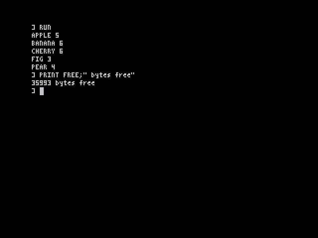
' Catching errors
DEF FN ratio(a, b)
IF b = 0 THEN ERROR 200, "Nothing to divide by"
RETURN a / b
ENDFN
DEF PROC test(a, b)
TRY
PRINT a; " / "; b; " = "; ratio(a, b)
CATCH
PRINT "Error "; ERR; ": "; ERR$
ENDTRY
ENDPROC
test 10, 4
test 1, 0
TRY
x = SQR -1
CATCH
PRINT "Error "; ERR; ": "; ERR$
ENDTRY
The output is 10 / 4 = 2.5, then 1 / 0 = Error 200: Nothing to divide by from the program's own ERROR, and Error 11: Bad argument from SQR.
The ball moves until it has made 300 moves or SPACE is held down; EXIT FOR leaves the loop early.
' Bouncing ball: SPACE stops it
DEF PROC move
PRINT AT y%, x%; " ";
x% = x% + dx%: y% = y% + dy%
IF x% <= 0 OR x% >= 63 THEN dx% = -dx%: BEEP 0.01, 24
IF y% <= 1 OR y% >= 22 THEN dy% = -dy%: BEEP 0.01, 12
PRINT AT y%, x%; "O";
ENDPROC
BORDER 1: PAPER 0: INK 5: CLS
PRINT AT 0, 0; "Bouncing ball - SPACE to stop"
x% = 10: y% = 5: dx% = 1: dy% = 1
FOR n% = 1 TO 300
move
WAIT 1
IF KEY(" ") THEN EXIT FOR
NEXT
PRINT AT 23, 0; "Moves: "; n% - 1;
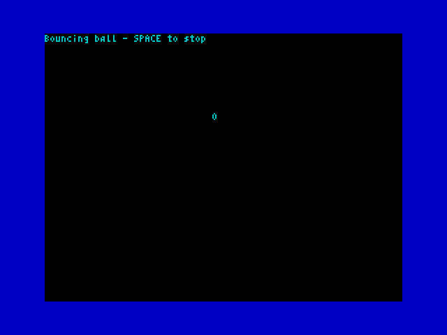
Each branch draws itself and then two smaller branches at an angle, until they are too short to see. LOCAL keeps each call's end point separate.
' A recursive tree
DEF PROC branch(x, y, a, l)
LOCAL x2, y2
IF l < 4 THEN ENDPROC
x2 = x + l * COS a: y2 = y + l * SIN a
PLOT x, y: DRAW TO x2, y2
branch x2, y2, a + 0.45, l * 0.7
branch x2, y2, a - 0.45, l * 0.7
ENDPROC
BORDER 0: PAPER 0: INK 4: CLS
t = FRAMES
branch 128, 0, PI / 2, 50
INK 6: PRINT AT 0, 0; "A tree in "; INT((FRAMES - t) / 50); " seconds"
It takes about 25 seconds, and prints how long it took.
The flag fills the top 16 character rows. The blue field and the central cross are printed as whole colour cells with PAPER; the white diagonals are drawn as short horizontal runs with PLOT and DRAW; and the thin red diagonals are made by clearing pixels with INVERSE 1 over red paper, so the red shows through while the white stays. Because each 8×8 colour cell holds no more than two colours, there is no colour clash. Remember that a colour cell is two of OpticBASIC's 64 text columns wide.
' The Union Flag, drawn by colour cells and lines
' The flag fills the top 16 character rows (y 64-191); the rows below stay black.
' Colours are laid out by 8x8 colour cell: blue PAPER for the field, white INK
' lines for the diagonals, red PAPER showing through cleared pixels for the
' thin red diagonals, and whole cells of PAPER for the central cross.
DEF PROC span(x1, x2, y)
' one horizontal run of pixels, clipped to the flag's width
IF x1 < 0 THEN x1 = 0
IF x2 > 255 THEN x2 = 255
IF x1 <= x2 THEN PLOT x1, y: DRAW x2 - x1, 0
ENDPROC
DEF PROC field
' the blue field: 16 rows of blue paper
PAPER 1: INK 7: BRIGHT 0
FOR r = 0 TO 15
PRINT AT r, 0; STRING$(64, " ");
NEXT r
ENDPROC
DEF PROC diagonals
' the white saltire: two bands, 65 pixels across, corner to corner
INK 7: PAPER 1: INVERSE 0
FOR r = 0 TO 127
a = 0
IF r < 64 THEN a = 1
span 2 * r - 32, 2 * r + 32 + a, 191 - r
span 223 + a - 2 * r, 287 - 2 * r, 191 - r
NEXT r
ENDPROC
DEF PROC edges(top, bottom)
' white pixel rows of the cross's border that share cells with the diagonals
INK 7: PAPER 1: INVERSE 0
FOR r = top TO bottom
span 0, 255, 191 - r
NEXT r
ENDPROC
DEF PROC red_diagonals
' the thin red diagonals, offset from the centre of each white band;
' clearing pixels lets the red paper show while the white ink stays
INK 7: PAPER 2: INVERSE 1
FOR r = 0 TO 35
span 2 * r - 15, 2 * r + 2, 191 - r
span 239 - 2 * r, 254 - 2 * r, 191 - r
NEXT r
FOR r = 92 TO 127
span 256 - 2 * r, 271 - 2 * r, 191 - r
span 2 * r - 1, 2 * r + 15, 191 - r
NEXT r
INVERSE 0
ENDPROC
DEF PROC cross
' the central cross in whole cells: white border, red centre
PRINT AT 5, 0; PAPER 7; STRING$(64, " ");
PRINT AT 10, 0; PAPER 7; STRING$(64, " ");
FOR r = 6 TO 9
PRINT AT r, 0; PAPER 2; STRING$(64, " ");
NEXT r
FOR r = 0 TO 15
IF r < 5 OR r > 10 THEN PRINT AT r, 26; PAPER 7; " "; PAPER 2; " "; PAPER 7; " ";
IF r >= 5 AND r <= 10 THEN PRINT AT r, 28; PAPER 2; " ";
NEXT r
ENDPROC
' main program
t = FRAMES
BORDER 0: PAPER 0: INK 7: CLS
field
diagonals
edges 36, 39
edges 88, 91
red_diagonals
cross
PAPER 0: INK 7
PRINT AT 22, 0; "Drawn in "; INT((FRAMES - t) / 5) / 10; " seconds";
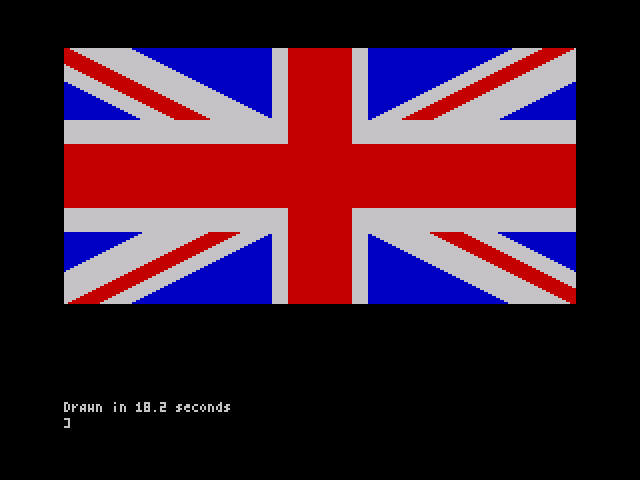
Happy Bat is a complete game in the style of Flappy Bird. Fly the bat through the gaps in the pipes and score a point for each one you pass. Touching a pipe, the ground or the sky ends the game. At first the gaps are wide and the pipes far apart, and both close up as the score rises. SPACE flaps the bat's wings and BREAK stops the program. The game is on the example tape: type LOAD "happybat" and it runs by itself. Its own repository is brixham99/happy-bat.
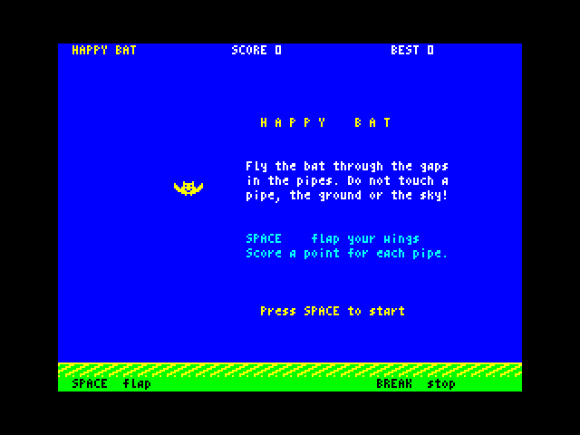
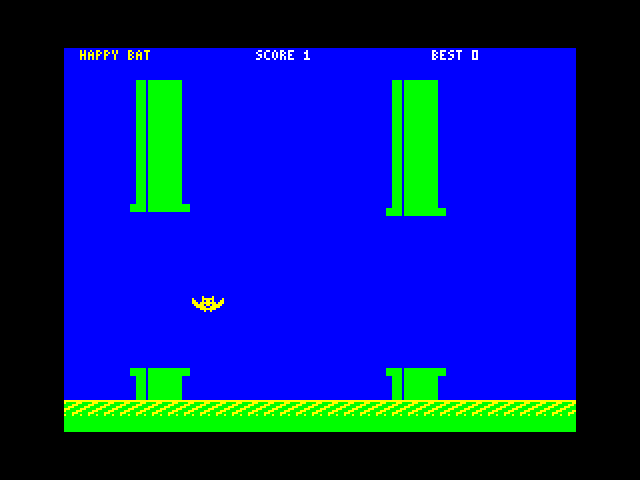
The example shows how to share a game between OpticBASIC and machine code. An OpticBASIC statement takes a few hundredths of a second, which is far too slow to move pipes a few pixels at a time. So the work is divided:
One step moves everything 4 pixels and takes two frames, so the game runs at about 23 steps a second. The BASIC loop in PROC play is only four statements a step.
CALL and USR cannot pass register values, so BASIC POKEs the values the code needs into a small parameter block, and USR 60003 hands back the result of each step in BC:
| Address | Use |
|---|---|
CALL 60000 |
A new playfield: clear it, colour it, draw the ground, no pipes; the bat at rest at line PEEK 60009 |
r% = USR 60003 |
One step. 0 = flying, 1 = crashed, 2 = a pipe got past the bat (a point) |
CALL 60006 |
Colour the bat red (game over) |
| 60009 | The bat's top line in the playfield, 0–152 |
| 60010, 60011 | The next pipe's gap: its first line, and the first line below it |
| 60012 | POKE 1 to start that pipe at the right-hand edge |
| 60013 | 1 = play; 0 = title (the ground scrolls; no gravity, no pipes) |
| 60014–60015 | "HB": the code is in memory |
| 60016–60019 | Gravity 2, flap 18, fastest fall 20 (in quarter pixels a step), and 2 frames a step |
The gap starts at 78 lines and closes by 2 lines a point, down to 52 from a score of 13: MAX(52, 78 - 2 * score%). A new pipe comes every 32 steps at first, then one step sooner every 2 points, down to 24 steps.
| Address | Contents |
|---|---|
| 24048–59999 | The program (5,507 bytes), its variables and the stacks. CLEAR 59999 keeps BASIC below the code |
| 60000–60019 | The jump table (init, step, dead) and the parameter block |
| 60020–60060 | The code's own variables, with a table of four pipes at 60034 |
| 60061–60994 | The code |
| 60995–61094 | The two pictures of the bat (16×8), the ground patterns and the pipe patterns |
The machine code must leave IX, IY and the alternate registers alone, because OpticBASIC uses them. It waits for the next frame with HALT, and reads FRAMES (23672) to pace itself. With the game loaded, PRINT FREE shows about 25,400 bytes free, and the figure stays the same however many games are played.
The program starts with CLEAR 59999, then loads the code with LOAD "hbcode" CODE unless the code is already there. CLEAR must be in the main program, not in a procedure, so the tape saves the program with SAVE "happybat" AUTO start, and PROC start simply does RUN.
' =============================================================
' HAPPY BAT - a Flappy Bird-style game for OpticOS v1.0.1
' OpticBASIC runs the game: title, pipes and their gaps, score,
' best score, game over and restart. A machine-code block
' "hbcode" (60000-61094, source happybat.asm) does the work that
' touches thousands of screen bytes each step: scrolling the
' ground, moving and drawing the pipes, and moving, drawing and
' testing the bat, with gravity and the flap key.
'
' Machine code, called with CALL / USR. They take no register
' arguments, so BASIC POKEs what the code needs first:
' CALL 60000 new playfield: clear, colour, draw ground;
' the bat starts at line PEEK 60009, at rest
' r% = USR 60003 one step: 0 = flying, 1 = crashed, 2 = a
' pipe got past the bat (a point)
' CALL 60006 colour the bat red (game over)
' Bytes BASIC POKEs:
' 60009 bat's top line (0-152) 60010 gap top 60011 gap end
' 60012 1 = start a new pipe 60013 1 = play, 0 = title
' 60014-60015 "HB": the code is loaded
' 60016 gravity 60017 flap speed 60018 fastest fall
' 60019 frames per step (speeds are in quarter pixels a step)
' =============================================================
' Main program. CLEAR 59999 keeps BASIC below 60000, then the
' code is loaded from tape unless it is already in memory.
CLEAR 59999
IF PEEK(60014) <> 72 OR PEEK(60015) <> 66 THEN LOAD "hbcode" CODE
RANDOMIZE
best% = 0
' the game-over box's rows, made once so no string is left over
box$ = STRING$(28, " ")
title
REPEAT
play
game_over
UNTIL FALSE
'
DEF PROC start
' The tape saves the program with AUTO start, so this runs
' once it has loaded. RUN begins again at the top, where the
' main program can use CLEAR (it must not be in a PROC).
RUN
ENDPROC
'
DEF PROC header
' The score line along the top: name, score and best score.
PRINT AT 0, 2; PAPER 1; INK 6; BRIGHT 1; "HAPPY BAT";
PRINT AT 0, 24; PAPER 1; INK 7; BRIGHT 1; "SCORE "; score%; " ";
PRINT AT 0, 46; PAPER 1; INK 7; BRIGHT 1; "BEST "; best%; " ";
ENDPROC
'
DEF PROC footer
' The help text on the bottom row, black on the green grass:
' on the title and game-over screens only (CALL 60000 clears
' it when a game starts).
PRINT AT 23, 2; PAPER 4; INK 0; BRIGHT 1; "SPACE flap"; TAB(44); "BREAK stop";
ENDPROC
'
DEF PROC release
' Wait until SPACE is let go, so one press is not read twice.
WHILE KEY(" ")
WEND
ENDPROC
'
DEF PROC title
' The title screen. CALL 60000 then POKE 60013, 0 is title
' mode: only the ground scrolls, and BASIC bobs the bat up
' and down on the spot until SPACE is pressed.
LOCAL t%, r%
BORDER 0: PAPER 1: INK 7: BRIGHT 1: CLS
score% = 0
CALL 60000
POKE 60013, 0
header
footer
PRINT AT 5, 28; PAPER 8; INK 6; BRIGHT 1; "H A P P Y B A T";
PRINT AT 8, 26; PAPER 8; INK 7; BRIGHT 1; "Fly the bat through the gaps";
PRINT AT 9, 26; PAPER 8; INK 7; BRIGHT 1; "in the pipes. Do not touch a";
PRINT AT 10, 26; PAPER 8; INK 7; BRIGHT 1; "pipe, the ground or the sky!";
PRINT AT 13, 26; PAPER 8; INK 5; BRIGHT 1; "SPACE flap your wings";
PRINT AT 14, 26; PAPER 8; INK 5; BRIGHT 1; "Score a point for each pipe.";
PRINT AT 18, 28; PAPER 8; INK 6; BRIGHT 1; FLASH 1; "Press SPACE to start";
t% = 0
REPEAT
t% = t% + 1
POKE 60009, 60 + ABS(t% MOD 16 - 8)
r% = USR 60003
UNTIL KEY(" ")
release
ENDPROC
'
DEF PROC play
' One game. The flight itself (SPACE, gravity, the top and
' the ground) is in the machine code, so that no press is
' missed; BASIC sets its constants here. Each pass of the
' loop is one step of 2 frames (25 a second): USR 60003
' moves everything 4 pixels and reports a crash or a point.
' BASIC starts a new pipe every n% steps: 32 (128 pixels
' apart) at first, closing up to 24 (96 pixels) as the score
' rises (see new_pipe). The bottom row is left empty in play.
LOCAL n%, r%, g%, gap%
POKE 60016, 2: ' gravity
POKE 60017, 18: ' flap
POKE 60018, 20: ' fastest fall
POKE 60019, 2: ' frames per step
POKE 60009, 64: ' the bat starts in the middle
CALL 60000
score% = 0
header
n% = 24: g% = 56: ' the first pipe comes after 24 steps
REPEAT
r% = USR 60003
n% = n% - 1: IF n% = 0 THEN new_pipe
IF r% = 2 THEN point
UNTIL r% = 1
ENDPROC
'
DEF PROC new_pipe
' Start the next pipe. Its gap is near the last one (g% moves
' up to 32 lines) and keeps its caps inside the playfield.
' Easy at first: the gap is 78 lines at score 0 and closes 2
' lines a point, down to 52 from score 13. The next pipe
' comes 32 steps later at first, one step sooner every 2
' points, down to 24 steps from score 16.
gap% = MAX(52, 78 - 2 * score%)
n% = MAX(24, 32 - (score% >> 1))
g% = g% + 8 * RND(9) - 40
g% = MAX(16, MIN(g%, 144 - gap%))
POKE 60010, g%
POKE 60011, g% + gap%
POKE 60012, 1
ENDPROC
'
DEF PROC point
' The bat got past a pipe: one more point.
score% = score% + 1
PRINT AT 0, 30; PAPER 1; INK 7; BRIGHT 1; score%;
BEEP 0.01, 48
ENDPROC
'
DEF PROC game_over
' The bat turns red and a falling tune plays. A new best score
' is kept in best%, which lasts until the program is run
' again. Then SPACE starts the next game.
LOCAL n%, r%
CALL 60006
FOR n% = 0 TO 4
BEEP 0.06, 12 - n% * 5
NEXT
FOR r% = 7 TO 14
PRINT AT r%, 24; PAPER 2; INK 7; BRIGHT 1; box$;
NEXT
PRINT AT 8, 29; PAPER 2; INK 6; BRIGHT 1; "G A M E O V E R";
PRINT AT 10, 31; PAPER 2; INK 7; BRIGHT 1; "Score "; score%;
IF score% > best%
best% = score%
PRINT AT 11, 31; PAPER 2; INK 6; BRIGHT 1; FLASH 1; "A new best!";
ELSE
PRINT AT 11, 31; PAPER 2; INK 7; BRIGHT 1; "Best "; best%;
ENDIF
PRINT AT 13, 27; PAPER 2; INK 5; BRIGHT 1; "SPACE to fly again";
header
footer
WAIT 40
release
REPEAT
WAIT 1
UNTIL KEY(" ")
ENDPROC
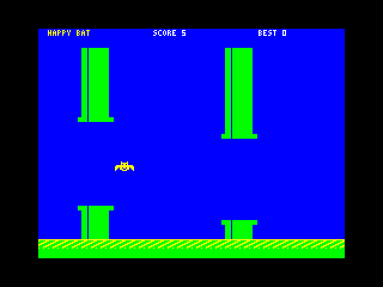
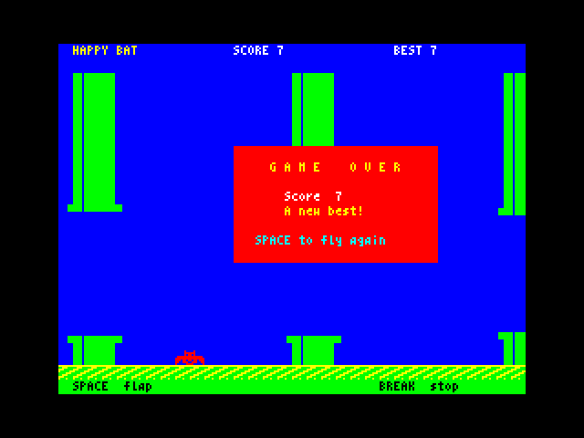
You do not need an assembler to make the machine code. The program below holds all 1,095 bytes as DATA lines. Each line has its address, 8 bytes in hex ($C3 is 195) and a check number: the line's bytes multiplied by 1, 2, 3 … 8 and added together. That catches a mistyped byte, and also two bytes typed the wrong way round. If a line is wrong, the program stops with that line's address, for example Check the line at 60024. A line left out stops it with DATA out of step at …. The last DATA item is the sum of every byte.
To make your own Happy Bat tape:
SAVE "happybat" AUTO start. Leave the tape where it stopped.NEW, then type in the loader below and RUN it. It does CLEAR 59999, POKEs the bytes to 60000–61094 and checks them. Then it saves them, after the program, with SAVE "hbcode" CODE 60000, 1095.LOAD "". The game runs as soon as it has loaded, and loads hbcode from the tape by itself.To play straight away without a tape, RUN the loader, then type in the game and RUN it. It finds the code already in memory, by the "HB" at 60014, and does not load it.
' =============================================================
' HBCODE - type-in loader for Happy Bat's machine code
' Type this in and RUN it. It puts the 1,095 bytes of code at
' 60000-61094, checks every line, and saves them to tape
' as "hbcode" CODE 60000,1095, for happybat.bas to load.
' Each DATA line: its address, 8 bytes in hex ($C3 = 195),
' and a check number: the bytes weighted 1, 2, 3 ... 8, added.
' A wrong line stops the program with its address, so you can
' find it; the last DATA item is the sum of all the bytes.
' =============================================================
CLEAR 59999
a = 60000: t = 0
REPEAT
READ d
IF d <> a THEN ERROR 200, "DATA out of step at " + STR$ a
s = 0
FOR i = 1 TO MIN(8, 61095 - a)
READ b: POKE a, b: a = a + 1
s = s + i * b: t = t + b
NEXT
READ k
IF k <> s THEN ERROR 201, "Check the line at " + STR$ d
UNTIL a = 61095
READ k
IF k <> t THEN ERROR 202, "Total wrong: " + STR$ t
PRINT "Code OK: 1095 bytes at 60000."
PRINT "Saving hbcode. Start the tape."
SAVE "hbcode" CODE 60000, 1095
PRINT "Done."
DATA 60000, $C3, $9D, $EA, $C3, $22, $EB, $C3, $CC, 6568
DATA 60008, $ED, $48, $28, $58, $00, $01, $48, $42, 1891
DATA 60016, $02, $12, $14, $02, $20, $01, $00, $00, 272
DATA 60024, $00, $00, $43, $EE, $00, $00, $00, $00, 1153
DATA 60032, $00, $00, $80, $80, $80, $80, $80, $80, 4224
DATA 60040, $80, $80, $80, $80, $80, $80, $80, $80, 4608
DATA 60048, $80, $80, $00, $00, $00, $00, $00, $00, 384
DATA 60056, $00, $00, $00, $00, $00, $0E, $10, $79, 1164
DATA 60064, $CD, $14, $EE, $06, $20, $AF, $77, $2C, 3378
DATA 60072, $10, $FC, $0C, $79, $FE, $C0, $20, $EF, 5598
DATA 60080, $21, $40, $58, $01, $80, $02, $3E, $4C, 2123
DATA 60088, $CD, $38, $EE, $21, $C0, $5A, $01, $20, 2926
DATA 60096, $00, $3E, $66, $CD, $38, $EE, $21, $E0, 4981
DATA 60104, $5A, $01, $20, $00, $3E, $60, $CD, $38, 2957
DATA 60112, $EE, $11, $83, $EE, $0E, $B0, $79, $CD, 5230
DATA 60120, $14, $EE, $06, $10, $1A, $77, $2C, $13, 1882
DATA 60128, $1A, $77, $2C, $1B, $10, $F6, $13, $13, 2345
DATA 60136, $0C, $79, $FE, $B8, $20, $E8, $21, $82, 4575
DATA 60144, $EA, $01, $10, $00, $3E, $80, $CD, $38, 3245
DATA 60152, $EE, $AF, $32, $7C, $EA, $32, $7D, $EA, 5451
DATA 60160, $32, $7E, $EA, $32, $6C, $EA, $67, $6F, 4757
DATA 60168, $22, $76, $EA, $3C, $32, $6D, $EA, $32, 4154
DATA 60176, $78, $EA, $3A, $69, $EA, $6F, $29, $29, 3633
DATA 60184, $22, $74, $EA, $3A, $78, $5C, $32, $7F, 3718
DATA 60192, $EA, $C9, $CD, $5D, $EB, $CD, $B1, $ED, 7163
DATA 60200, $AF, $32, $80, $EA, $32, $81, $EA, $3A, 4721
DATA 60208, $6D, $EA, $B7, $28, $06, $CD, $74, $EB, 5238
DATA 60216, $CD, $F5, $EB, $CD, $FA, $EC, $21, $7D, 6117
DATA 60224, $EA, $34, $CD, $87, $ED, $79, $B7, $28, 5005
DATA 60232, $03, $32, $80, $EA, $01, $01, $00, $3A, 1898
DATA 60240, $80, $EA, $B7, $C0, $0C, $3A, $81, $EA, 5096
DATA 60248, $B7, $C0, $0E, $00, $C9, $21, $7F, $EA, 4573
DATA 60256, $3A, $78, $5C, $96, $47, $3A, $73, $EA, 4554
DATA 60264, $3D, $B8, $38, $03, $76, $18, $F1, $3A, 3494
DATA 60272, $78, $5C, $77, $C9, $3E, $7F, $DB, $FE, 6102
DATA 60280, $2F, $E6, $01, $21, $78, $EA, $46, $77, 4088
DATA 60288, $28, $11, $05, $28, $0E, $3A, $71, $EA, 3330
DATA 60296, $ED, $44, $6F, $26, $FF, $22, $76, $EA, 5035
DATA 60304, $CD, $E1, $EB, $2A, $76, $EA, $3A, $70, 4824
DATA 60312, $EA, $5F, $16, $00, $19, $CB, $7C, $20, 2957
DATA 60320, $0D, $3A, $72, $EA, $5F, $7C, $B7, $20, 4163
DATA 60328, $04, $7D, $BB, $38, $01, $EB, $22, $76, 3636
DATA 60336, $EA, $ED, $5B, $74, $EA, $19, $CB, $7C, 5178
DATA 60344, $28, $05, $21, $00, $00, $18, $0D, $E5, 2216
DATA 60352, $11, $61, $02, $B7, $ED, $52, $E1, $38, 4649
DATA 60360, $08, $21, $60, $02, $3E, $01, $32, $80, 2060
DATA 60368, $EA, $22, $74, $EA, $CB, $3C, $CB, $1D, 4614
DATA 60376, $CB, $3C, $CB, $1D, $7D, $32, $69, $EA, 4580
DATA 60384, $C9, $06, $18, $78, $E6, $01, $07, $07, 2026
DATA 60392, $07, $07, $D3, $FE, $78, $C6, $08, $3D, 4002
DATA 60400, $20, $FD, $10, $EF, $C9, $3A, $6C, $EA, 5523
DATA 60408, $B7, $28, $22, $AF, $32, $6C, $EA, $21, 3865
DATA 60416, $82, $EA, $11, $04, $00, $06, $04, $7E, 1737
DATA 60424, $FE, $80, $28, $05, $19, $10, $F8, $18, 2799
DATA 60432, $0C, $36, $40, $23, $3A, $6A, $EA, $77, 3968
DATA 60440, $23, $3A, $6B, $EA, $77, $21, $82, $EA, 4983
DATA 60448, $06, $04, $C5, $E5, $CD, $30, $EC, $E1, 6286
DATA 60456, $11, $04, $00, $19, $C1, $10, $F3, $C9, 4495
DATA 60464, $7E, $FE, $80, $C8, $3D, $77, $FE, $08, 4679
DATA 60472, $20, $06, $3E, $01, $32, $81, $EA, $7E, 3904
DATA 60480, $C6, $08, $FE, $49, $38, $03, $36, $80, 2968
DATA 60488, $C9, $23, $7E, $32, $92, $EA, $23, $7E, 4236
DATA 60496, $32, $93, $EA, $2B, $2B, $7E, $11, $93, 3484
DATA 60504, $EE, $01, $9D, $EE, $CB, $47, $28, $06, 3432
DATA 60512, $11, $98, $EE, $01, $A2, $EE, $ED, $53, 5600
DATA 60520, $97, $EA, $ED, $43, $99, $EA, $CB, $2F, 5564
DATA 60528, $0E, $05, $CB, $7F, $28, $18, $ED, $44, 3688
DATA 60536, $47, $79, $90, $4F, $58, $16, $00, $2A, 1969
DATA 60544, $97, $EA, $19, $22, $97, $EA, $2A, $99, 4507
DATA 60552, $EA, $19, $22, $99, $EA, $AF, $32, $94, 4752
DATA 60560, $EA, $81, $D6, $20, $38, $06, $47, $79, 3043
DATA 60568, $90, $C8, $D8, $4F, $79, $32, $95, $EA, 5328
DATA 60576, $2A, $97, $EA, $22, $9B, $EA, $3A, $92, 4935
DATA 60584, $EA, $D6, $04, $47, $AF, $CD, $DC, $EC, 6491
DATA 60592, $2A, $99, $EA, $22, $9B, $EA, $3A, $92, 4939
DATA 60600, $EA, $D6, $04, $06, $04, $CD, $DC, $EC, 5376
DATA 60608, $3A, $93, $EA, $06, $04, $CD, $DC, $EC, 5756
DATA 60616, $2A, $97, $EA, $22, $9B, $EA, $3A, $93, 4943
DATA 60624, $EA, $C6, $04, $4F, $3E, $A0, $91, $47, 3811
DATA 60632, $79, $C3, $DC, $EC, $C6, $10, $CD, $14, 4796
DATA 60640, $EE, $3A, $94, $EA, $B5, $6F, $C5, $E5, 6516
DATA 60648, $EB, $2A, $9B, $EA, $ED, $4B, $95, $EA, 6270
DATA 60656, $ED, $B0, $E1, $CD, $29, $EE, $C1, $10, 5196
DATA 60664, $ED, $C9, $3A, $7E, $EA, $5F, $16, $00, 3211
DATA 60672, $21, $63, $EE, $19, $EB, $0E, $B0, $79, 4504
DATA 60680, $CD, $14, $EE, $7D, $F6, $1F, $6F, $1A, 3860
DATA 60688, $CD, $27, $ED, $13, $13, $13, $13, $0C, 1508
DATA 60696, $79, $FE, $B8, $20, $EA, $3A, $7E, $EA, 5581
DATA 60704, $3C, $E6, $03, $32, $7E, $EA, $C9, $ED, 6066
DATA 60712, $6F, $2D, $ED, $6F, $2D, $ED, $6F, $2D, 4140
DATA 60720, $ED, $6F, $2D, $ED, $6F, $2D, $ED, $6F, 4914
DATA 60728, $2D, $ED, $6F, $2D, $ED, $6F, $2D, $ED, 5094
DATA 60736, $6F, $2D, $ED, $6F, $2D, $ED, $6F, $2D, 4140
DATA 60744, $ED, $6F, $2D, $ED, $6F, $2D, $ED, $6F, 4914
DATA 60752, $2D, $ED, $6F, $2D, $ED, $6F, $2D, $ED, 5094
DATA 60760, $6F, $2D, $ED, $6F, $2D, $ED, $6F, $2D, 4140
DATA 60768, $ED, $6F, $2D, $ED, $6F, $2D, $ED, $6F, 4914
DATA 60776, $2D, $ED, $6F, $2D, $ED, $6F, $2D, $ED, 5094
DATA 60784, $6F, $2D, $ED, $6F, $2D, $ED, $6F, $2D, 4140
DATA 60792, $ED, $6F, $2D, $ED, $6F, $2D, $ED, $6F, 4914
DATA 60800, $2D, $ED, $6F, $2D, $ED, $6F, $C9, $3A, 4754
DATA 60808, $7D, $EA, $E6, $02, $21, $43, $EE, $28, 3844
DATA 60816, $03, $21, $53, $EE, $22, $7A, $EA, $EB, 5690
DATA 60824, $3A, $69, $EA, $32, $79, $EA, $CD, $D4, 6310
DATA 60832, $ED, $C5, $3A, $79, $EA, $1E, $4E, $CD, 4825
DATA 60840, $F8, $ED, $3E, $01, $32, $7C, $EA, $C1, 5088
DATA 60848, $C9, $3A, $7C, $EA, $B7, $C8, $AF, $32, 5365
DATA 60856, $7C, $EA, $ED, $5B, $7A, $EA, $3A, $79, 5055
DATA 60864, $EA, $CD, $D4, $ED, $3A, $79, $EA, $1E, 5122
DATA 60872, $4C, $C3, $F8, $ED, $3A, $79, $EA, $1E, 5052
DATA 60880, $4A, $C3, $F8, $ED, $C6, $10, $06, $08, 3348
DATA 60888, $0E, $00, $F5, $CD, $14, $EE, $7D, $F6, 5940
DATA 60896, $08, $6F, $1A, $A6, $B1, $4F, $1A, $AE, 3905
DATA 60904, $77, $13, $2C, $1A, $A6, $B1, $4F, $1A, 3046
DATA 60912, $AE, $77, $13, $F1, $3C, $10, $E3, $C9, 5026
DATA 60920, $C6, $10, $F5, $CD, $01, $EE, $F1, $C6, 6489
DATA 60928, $07, $E6, $F8, $6F, $26, $00, $29, $29, 2460
DATA 60936, $7C, $C6, $58, $67, $7D, $F6, $08, $6F, 4241
DATA 60944, $73, $2C, $73, $C9, $6F, $E6, $07, $F6, 5304
DATA 60952, $40, $67, $7D, $1F, $1F, $1F, $E6, $18, 2912
DATA 60960, $B4, $67, $7D, $17, $17, $E6, $E0, $6F, 4804
DATA 60968, $C9, $24, $7C, $E6, $07, $C0, $7D, $C6, 5211
DATA 60976, $20, $6F, $D8, $7C, $D6, $08, $67, $C9, 4845
DATA 60984, $77, $0B, $78, $B1, $C8, $54, $5D, $13, 3516
DATA 60992, $ED, $B0, $C9, $04, $20, $87, $E1, $C5, 5329
DATA 61000, $A3, $EF, $F7, $7D, $BE, $3E, $7C, $0F, 4192
DATA 61008, $F0, $02, $40, $04, $20, $07, $E0, $05, 2262
DATA 61016, $A0, $7F, $FE, $FF, $FF, $ED, $B7, $CE, 7822
DATA 61024, $73, $83, $C1, $0F, $0F, $0F, $0F, $08, 1350
DATA 61032, $03, $08, $03, $00, $0E, $00, $0E, $03, 220
DATA 61040, $08, $03, $08, $0E, $00, $0E, $00, $08, 242
DATA 61048, $03, $08, $03, $00, $0E, $00, $0E, $08, 260
DATA 61056, $08, $08, $08, $FF, $FF, $83, $83, $0E, 4158
DATA 61064, $0E, $38, $38, $E0, $E0, $83, $83, $0E, 4125
DATA 61072, $0E, $88, $88, $0F, $BF, $FF, $E0, $00, 4807
DATA 61080, $00, $FB, $FF, $FE, $00, $7F, $BF, $FF, 6422
DATA 61088, $FE, $00, $07, $FB, $FF, $FF, $E0, 5652
DATA 128134
The annotated assembler source, happybat.asm, is printed in full in the next chapter.
This is the complete source of Happy Bat's machine code. It is written for the pasmo assembler (pasmo --bin happybat.asm hbcode.bin). The DATA lines in the previous chapter are its output. Like the rest of OpticOS, it is original, clean-room code: it uses and calls no Sinclair ROM code. It touches only the screen, the keyboard and speaker port, FRAMES and its own variables.
The main routines are:
| Routine | What it does |
|---|---|
init |
Clears the playfield, sets its colours, draws the ground and resets the pipes and the bat |
step |
One step: wait for the frame, take the bat off, move the bat (phys), move and draw the pipes (pipes), scroll the ground (ground), then test the bat for a crash and draw it again (bat_on). Returns 0, 1 or 2 in BC |
dead |
Turns the bat's colour cells red |
phys |
Reads SPACE on port $7FFE, flaps once per press with a click on the speaker, adds gravity and limits the fall; hitting the top or the ground is a crash |
pipes, pipe1, seg |
Moves each pipe 4 pixels left, starts a new one when BASIC asks, counts a point as a pipe passes the bat, and draws the pipes clipped at the screen edges |
ground |
Scrolls the ground 4 pixels with RLD |
bat_on, bat_off, bat_xor |
Tests the bat's 16×8 picture against the screen with AND, then draws or removes it with XOR |
pace, ln_addr, fill |
Waits for the next step, works out a screen line's address, and fills memory |
; =============================================================================
; happybat.asm - the machine-code half of Happy Bat, for OpticOS v1.0.1
; Assemble with pasmo: pasmo --bin happybat.asm hbcode.bin
;
; Written from scratch for OpticOS (clean room): no Sinclair ROM code is used
; or called. The code touches only the screen, the keyboard/speaker port and
; its own variables, and reads the frame counter FRAMES (23672), whose
; address OpticOS keeps. It does not use IX, IY or the alternate registers,
; so the OpticBASIC interpreter's state is left alone. It needs interrupts on
; (they are, under OpticBASIC) because it waits for frames with HALT.
;
; OpticBASIC's CALL and USR take no register arguments, so BASIC POKEs the
; parameter block below, and USR 60003 hands back the result of a step in BC.
;
; Screen layout (pixel lines from the top of the screen):
; lines 0- 15 character rows 0-1: the score line, printed by BASIC
; lines 16-175 the playfield, 160 lines: sky, pipes and the bat
; lines 176-183 character row 22: the ground, which scrolls
; lines 184-191 character row 23: help text, printed by BASIC
; Horizontal positions are counted in nibbles (4 pixels = one character at
; 64 columns): the screen is 64 nibbles wide and everything moves one nibble
; left per step.
; =============================================================================
PF_TOP equ 16 ; first screen line of the playfield
PF_H equ 160 ; playfield height in lines
GR_TOP equ 176 ; first line of the ground
SC_END equ 184 ; one past the ground's last line
YMAX equ 152 ; lowest top line for the 8-line bat
BAT_COL equ 8 ; the bat's byte column: x = 64-79
BAT_NIB equ 16 ; ... = nibble 16
NPIPE equ 4 ; pipe slots (pipes 24 nibbles apart: at most 4)
FREE equ $80 ; x value marking a free slot
A_SKY equ $4C ; bright, blue paper, green ink (pipes)
A_BAT equ $4E ; bright, blue paper, yellow ink (the bat)
A_DEAD equ $4A ; bright, blue paper, red ink (a dead bat)
A_GROUND equ $66 ; bright, green paper, yellow ink
A_BASE equ $60 ; bright, green paper, black ink (row 23)
ATTRS equ $5800 ; start of the attribute map
FRAMES equ 23672 ; OpticOS frame counter (low byte)
org 60000
; ---- entry points: the addresses BASIC calls ---------------------------------
jp init ; 60000 CALL 60000: new playfield
jp step ; 60003 USR 60003: one step -> BC = 0, 1 or 2
jp dead ; 60006 CALL 60006: colour the bat red
; ---- parameters, POKEd (and PEEKed) by BASIC -------------------------------
baty: defb 72 ; 60009 bat's top line in the playfield (0-152);
; BASIC sets it on the title screen and
; before CALL 60000; in play the code moves it
gaptop: defb 40 ; 60010 first line of the next pipe's gap
gapbot: defb 88 ; 60011 first line below that gap
newpipe: defb 0 ; 60012 POKE 1: start that pipe at the right edge
mode: defb 1 ; 60013 1 = play; 0 = title (no gravity, no
; pipes: only the ground scrolls)
sig: defm "HB" ; 60014 signature: BASIC checks it to see
; whether the code is already loaded
grav: defb 2 ; 60016 gravity, quarter pixels per step per step
flapv: defb 18 ; 60017 a flap's upward speed, quarter px / step
vmax: defb 20 ; 60018 fastest fall, quarter pixels per step
pacev: defb 2 ; 60019 frames per step at least (1 or more)
; ---- internal state -------------------------------------------------------
y16: defw 288 ; bat height in quarter pixels (0 - 4*YMAX)
v16: defw 0 ; its speed, quarter pixels per step (+ = down)
pkey: defb 0 ; 1 if SPACE was down at the last step
oldy: defb 0 ; where the bat was drawn last
oldspr: defw spr_up ; and with which wing frame
drawn: defb 0 ; 1 while the bat is on the screen
tick: defb 0 ; step counter, for the wing beat
phase: defb 0 ; ground pattern phase, 0-3
lastf: defb 0 ; FRAMES at the last step, for pacing
crash: defb 0 ; set during a step: hit the top or the ground
scored: defb 0 ; set during a step: a pipe got past the bat
ptab: defs NPIPE*4,FREE ; pipes: x (nibble of the left edge), gap top,
; gap bottom, spare
pg1: defb 0 ; the pipe being drawn: its gap top
pg2: defb 0 ; and gap bottom
scol: defb 0 ; first byte column written on each line
slen: defw 0 ; bytes written on each line (high byte 0)
sbody: defw 0 ; where in its body pattern to start
scap: defw 0 ; and in its cap pattern
sptr: defw 0 ; pattern for the lines seg is drawing
; -----------------------------------------------------------------------------
; init: clear the screen below the score line, colour the sky, ground and
; help row, draw the ground, and reset everything: no pipes, no bat on the
; screen, play mode, the bat at height baty and not moving.
; -----------------------------------------------------------------------------
init: ld c,PF_TOP ; C = screen line
in_clr: ld a,c
call ln_addr ; HL = start of line C
ld b,32
xor a
in_cb: ld (hl),a ; clear its 32 bytes
inc l
djnz in_cb
inc c
ld a,c
cp 192
jr nz,in_clr
ld hl,ATTRS+2*32 ; rows 2-21: sky
ld bc,20*32
ld a,A_SKY
call fill
ld hl,ATTRS+22*32 ; row 22: ground
ld bc,32
ld a,A_GROUND
call fill
ld hl,ATTRS+23*32 ; row 23: help text
ld bc,32
ld a,A_BASE
call fill
ld de,ginit ; draw the ground: two bytes, 16 times a line
ld c,GR_TOP
in_gr: ld a,c
call ln_addr
ld b,16
in_g2: ld a,(de)
ld (hl),a
inc l
inc de
ld a,(de)
ld (hl),a
inc l
dec de
djnz in_g2
inc de ; next ground line's pair
inc de
inc c
ld a,c
cp SC_END
jr nz,in_gr
ld hl,ptab ; every pipe slot free
ld bc,NPIPE*4
ld a,FREE
call fill
xor a
ld (drawn),a ; no bat on the screen
ld (tick),a
ld (phase),a ; 64 nibbles drawn: the next one is phase 0
ld (newpipe),a
ld h,a
ld l,a
ld (v16),hl ; not moving
inc a
ld (mode),a ; play mode
ld (pkey),a ; a SPACE still held from before is not a flap
ld a,(baty) ; height in quarter pixels = baty * 4
ld l,a
add hl,hl
add hl,hl
ld (y16),hl
ld a,(FRAMES)
ld (lastf),a
ret
; -----------------------------------------------------------------------------
; step: one step of the game, called with h% = USR 60003.
; 1. wait until pacev frames have passed since the last step, so the game
; runs at the same speed however much is on the screen;
; 2. take the bat off the screen;
; 3. in play: read SPACE and move the bat (phys), then start, move and draw
; the pipes (pipes);
; 4. scroll the ground; put the bat back, testing its pixels as it goes.
; Returns BC = 1 if the bat crashed (pipe, ground or top), else 2 if a pipe
; has just got past the bat (a point), else 0.
; -----------------------------------------------------------------------------
step: call pace
call bat_off
xor a
ld (crash),a
ld (scored),a
ld a,(mode)
or a
jr z,st_t ; title: no gravity, no pipes
call phys
call pipes
st_t: call ground
ld hl,tick
inc (hl)
call bat_on ; C <> 0: the bat touched a pipe
ld a,c
or a
jr z,st_1
ld (crash),a
st_1: ld bc,1
ld a,(crash)
or a
ret nz ; 1: crashed
inc c
ld a,(scored)
or a
ret nz ; 2: scored
ld c,0
ret ; 0: flying on
; -----------------------------------------------------------------------------
; pace: HALT until at least pacev frames have passed since the last call.
; -----------------------------------------------------------------------------
pace: ld hl,lastf
pa_lp: ld a,(FRAMES)
sub (hl) ; frames since the last step
ld b,a
ld a,(pacev)
dec a
cp b ; carry if B >= pacev
jr c,pa_ok
halt ; wait for the next frame
jr pa_lp
pa_ok: ld a,(FRAMES)
ld (hl),a
ret
; -----------------------------------------------------------------------------
; phys: the bat's flight. A new press of SPACE (it was up at the last step)
; sets the speed to -flapv and chirps; then gravity adds grav to the speed, up
; to vmax downwards, and the speed is added to the height. Going above the
; top or below YMAX stops the bat there and sets crash. baty = height / 4.
; -----------------------------------------------------------------------------
phys: ld a,$7F ; keyboard half-row SPACE, SYMBOL, M, N, B
in a,($FE)
cpl
and 1 ; A = 1 while SPACE is held
ld hl,pkey
ld b,(hl)
ld (hl),a
jr z,ph_g ; not held
dec b
jr z,ph_g ; held, but it was held last step too
ld a,(flapv) ; a flap: speed = -flapv
neg
ld l,a
ld h,$FF
ld (v16),hl
call chirp
ph_g: ld hl,(v16) ; gravity
ld a,(grav)
ld e,a
ld d,0
add hl,de
bit 7,h
jr nz,ph_v ; still going up: no limit
ld a,(vmax)
ld e,a
ld a,h
or a
jr nz,ph_cl
ld a,l
cp e
jr c,ph_v
ph_cl: ex de,hl ; falling too fast: speed = vmax
ph_v: ld (v16),hl
ld de,(y16)
add hl,de ; new height
bit 7,h
jr z,ph_lo
ld hl,0 ; above the top of the playfield
jr ph_cr
ph_lo: push hl
ld de,YMAX*4+1
or a
sbc hl,de
pop hl
jr c,ph_ok
ld hl,YMAX*4 ; on the ground
ph_cr: ld a,1
ld (crash),a
ph_ok: ld (y16),hl
srl h ; baty = height / 4
rr l
srl h
rr l
ld a,l
ld (baty),a
ret
; -----------------------------------------------------------------------------
; chirp: a short rising click on the speaker for a flap (about 1 ms).
; Bit 4 of port 254 drives the speaker; bits 0-2 keep the border black.
; -----------------------------------------------------------------------------
chirp: ld b,24
ch_lp: ld a,b
and 1
rlca
rlca
rlca
rlca
out ($FE),a
ld a,b
add a,8
ch_d: dec a
jr nz,ch_d
djnz ch_lp
ret
; -----------------------------------------------------------------------------
; pipes: if BASIC asked for one (newpipe), put a new pipe in a free slot at
; x = 64, just off the right edge, with the gap from gaptop/gapbot. Then
; move and redraw every pipe in use (pipe1).
; -----------------------------------------------------------------------------
pipes: ld a,(newpipe)
or a
jr z,pp_mv
xor a
ld (newpipe),a
ld hl,ptab
ld de,4
ld b,NPIPE
pp_f: ld a,(hl)
cp FREE
jr z,pp_new
add hl,de
djnz pp_f
jr pp_mv ; no free slot (cannot happen 24 steps apart)
pp_new: ld (hl),64
inc hl
ld a,(gaptop)
ld (hl),a
inc hl
ld a,(gapbot)
ld (hl),a
pp_mv: ld hl,ptab
ld b,NPIPE
pp_lp: push bc
push hl
call pipe1
pop hl
ld de,4
add hl,de
pop bc
djnz pp_lp
ret
; -----------------------------------------------------------------------------
; pipe1: move the pipe in slot HL one nibble left and draw it. A pipe is 8
; nibbles wide: x .. x+7. Its right edge passing the bat (x = 8, so x+7 = 15
; is just left of nibble 16) sets scored. A pipe gone off the left (x < -8)
; frees its slot. Each line gets 5 bytes from a pattern (body or cap, for
; even or odd x), clipped to the screen; the 5th byte rubs out the pixels
; the pipe has just left on its right. The gap's lines are not touched.
; -----------------------------------------------------------------------------
pipe1: ld a,(hl)
cp FREE
ret z
dec a ; one nibble left
ld (hl),a
cp BAT_NIB-8
jr nz,p1_a
ld a,1
ld (scored),a ; its right edge is past the bat
ld a,(hl)
p1_a: add a,8 ; x from -8 to 64 is on (or next to) the screen
cp 73
jr c,p1_on
ld (hl),FREE ; gone: free the slot
ret
p1_on: inc hl
ld a,(hl)
ld (pg1),a ; gap top
inc hl
ld a,(hl)
ld (pg2),a ; gap bottom
dec hl
dec hl
ld a,(hl) ; A = x
ld de,body_e ; patterns for even x
ld bc,cap_e
bit 0,a
jr z,p1_ev
ld de,body_o ; or odd x
ld bc,cap_o
p1_ev: ld (sbody),de
ld (scap),bc
sra a ; A = first byte column = x / 2, rounded down
ld c,5 ; C = bytes a line
bit 7,a
jr z,p1_r
neg ; partly off the left: A = bytes cut off
ld b,a
ld a,c
sub b
ld c,a
ld e,b ; start that far into the patterns
ld d,0
ld hl,(sbody)
add hl,de
ld (sbody),hl
ld hl,(scap)
add hl,de
ld (scap),hl
xor a ; and at column 0
p1_r: ld (scol),a
add a,c ; partly off the right?
sub 32
jr c,p1_w
ld b,a ; B = bytes beyond column 31
ld a,c
sub b
ret z ; nothing on the screen yet
ret c
ld c,a
p1_w: ld a,c
ld (slen),a
ld hl,(sbody) ; body from the top down to the top cap
ld (sptr),hl
ld a,(pg1)
sub 4
ld b,a
xor a
call seg
ld hl,(scap) ; the cap above the gap
ld (sptr),hl
ld a,(pg1)
sub 4
ld b,4
call seg
ld a,(pg2) ; the cap below it
ld b,4
call seg
ld hl,(sbody) ; body from below that cap to the ground
ld (sptr),hl
ld a,(pg2)
add a,4
ld c,a
ld a,PF_H
sub c
ld b,a
ld a,c
jp seg
; -----------------------------------------------------------------------------
; seg: draw B lines (B > 0) of a pipe, from playfield line A down: on each
; line copy slen bytes of the pattern at sptr to byte column scol.
; -----------------------------------------------------------------------------
seg: add a,PF_TOP
call ln_addr
ld a,(scol)
or l
ld l,a ; HL = first byte to write
sg_lp: push bc
push hl
ex de,hl ; DE = screen
ld hl,(sptr)
ld bc,(slen)
ldir
pop hl
call nxt_line
pop bc
djnz sg_lp
ret
; -----------------------------------------------------------------------------
; ground: scroll the 8 ground lines 4 pixels left, feeding in each line's
; next pattern nibble at the right, then advance the pattern phase.
; -----------------------------------------------------------------------------
ground: ld a,(phase)
ld e,a
ld d,0
ld hl,gpat
add hl,de
ex de,hl ; DE -> this phase's nibble for ground line 0
ld c,GR_TOP
gd_lp: ld a,c
call ln_addr
ld a,l
or 31 ; the line's last byte
ld l,a
ld a,(de) ; nibble to feed in
call rot_line
inc de ; same phase, next line: 4 bytes on
inc de
inc de
inc de
inc c
ld a,c
cp SC_END
jr nz,gd_lp
ld a,(phase)
inc a
and 3
ld (phase),a
ret
; -----------------------------------------------------------------------------
; rot_line: scroll one screen line 4 pixels left. HL = its last byte (x 31),
; A's low nibble = the 4 pixels to bring in at the right. RLD moves the
; byte's low nibble up, A's nibble into the low half, and the byte's old high
; nibble into A, which carries on into the byte to its left. Unrolled:
; 32 x (RLD, DEC L), about 700 T-states a line.
; -----------------------------------------------------------------------------
rot_line:
rept 31
rld
dec l
endm
rld
ret
; -----------------------------------------------------------------------------
; bat_on: draw the bat at baty with this step's wing frame (the wings beat
; every two steps) and colour its cells yellow. Returns C <> 0 if any of its
; pixels landed on something already on the screen (a pipe).
; -----------------------------------------------------------------------------
bat_on: ld a,(tick)
and 2
ld hl,spr_up
jr z,bo_1
ld hl,spr_dn
bo_1: ld (oldspr),hl
ex de,hl ; DE = sprite
ld a,(baty)
ld (oldy),a
call bat_xor ; C = sprite AND screen, before drawing
push bc
ld a,(oldy)
ld e,A_BAT
call bat_attr
ld a,1
ld (drawn),a
pop bc
ret
; -----------------------------------------------------------------------------
; bat_off: if the bat is on the screen, XOR it away (which restores exactly
; what was under it) and give its cells back the sky colour.
; -----------------------------------------------------------------------------
bat_off: ld a,(drawn)
or a
ret z
xor a
ld (drawn),a
ld de,(oldspr)
ld a,(oldy)
call bat_xor
ld a,(oldy)
ld e,A_SKY
jp bat_attr
; -----------------------------------------------------------------------------
; dead: colour the bat red where it was last drawn (game over).
; -----------------------------------------------------------------------------
dead: ld a,(oldy)
ld e,A_DEAD
jp bat_attr
; -----------------------------------------------------------------------------
; bat_xor: XOR the 16 x 8 sprite at DE onto the screen at byte column BAT_COL,
; playfield line A. Returns C = the OR of (sprite AND screen) taken before
; each byte is changed: non-zero means the bat overlapped something.
; -----------------------------------------------------------------------------
bat_xor: add a,PF_TOP ; playfield line -> screen line
ld b,8
ld c,0
bx_lp: push af
call ln_addr
ld a,l
or BAT_COL
ld l,a
ld a,(de) ; left byte
and (hl)
or c
ld c,a
ld a,(de)
xor (hl)
ld (hl),a
inc de
inc l
ld a,(de) ; right byte
and (hl)
or c
ld c,a
ld a,(de)
xor (hl)
ld (hl),a
inc de
pop af
inc a
djnz bx_lp
ret
; -----------------------------------------------------------------------------
; bat_attr: set the attribute E in the cells the bat covers when its top is at
; playfield line A: two columns, in the character row of its top line and of
; its bottom line (the same row when it is aligned).
; -----------------------------------------------------------------------------
bat_attr:
add a,PF_TOP
push af
call ba_row ; row of the top line
pop af
add a,7 ; row of the bottom line
ba_row: and $F8 ; A = screen line: row * 8
ld l,a
ld h,0
add hl,hl
add hl,hl ; row * 32
ld a,h
add a,ATTRS/256
ld h,a
ld a,l
or BAT_COL
ld l,a
ld (hl),e
inc l
ld (hl),e
ret
; -----------------------------------------------------------------------------
; ln_addr: A = screen line 0-191 -> HL = address of its first byte.
; The Spectrum interleaves its screen: the address bits are
; 0 1 0 y7 y6 y2 y1 y0 | y5 y4 y3 x4 x3 x2 x1 x0
; Uses A and HL only, so BC and DE survive.
; -----------------------------------------------------------------------------
ln_addr:
ld l,a
and 7 ; y2-y0
or $40
ld h,a
ld a,l
rra
rra
rra
and $18 ; y7 y6 -> bits 4, 3
or h
ld h,a
ld a,l
rla
rla
and $E0 ; y5-y3 -> bits 7-5
ld l,a
ret
; -----------------------------------------------------------------------------
; nxt_line: HL = a screen address -> the same column one line down. Within
; a character row that is the next 256 bytes; at a row boundary, 32 bytes on
; and back 8 x 256 (unless that crosses into the next third of the screen).
; -----------------------------------------------------------------------------
nxt_line:
inc h
ld a,h
and 7
ret nz
ld a,l
add a,32
ld l,a
ret c
ld a,h
sub 8
ld h,a
ret
; -----------------------------------------------------------------------------
; fill: store A in BC bytes from HL (BC > 0), using LDIR.
; -----------------------------------------------------------------------------
fill: ld (hl),a
dec bc
ld a,b
or c
ret z
ld d,h
ld e,l
inc de
ldir
ret
; ---- data -------------------------------------------------------------------
; Sprites, ground and pipe patterns (generated by tools/gen_tables.py; the
; comments show the pixels).
spr_up: ; wings up: 16 x 8 pixels, 2 bytes a line
defb $04,$20 ; # #
defb $87,$E1 ; # ###### #
defb $C5,$A3 ; ## # ## # ##
defb $EF,$F7 ; ### ######## ###
defb $7D,$BE ; ##### ## #####
defb $3E,$7C ; ##### #####
defb $0F,$F0 ; ########
defb $02,$40 ; # #
spr_dn: ; wings down
defb $04,$20 ; # #
defb $07,$E0 ; ######
defb $05,$A0 ; # ## #
defb $7F,$FE ; ##############
defb $FF,$FF ; ################
defb $ED,$B7 ; ### ## ## ## ###
defb $CE,$73 ; ## ### ### ##
defb $83,$C1 ; # #### #
gpat: ; ground: 8 lines x 4 nibbles (one 16-pixel repeat)
defb $F,$F,$F,$F ; ################
defb $8,$3,$8,$3 ; # ### ##
defb $0,$E,$0,$E ; ### ###
defb $3,$8,$3,$8 ; ### ###
defb $E,$0,$E,$0 ; ### ###
defb $8,$3,$8,$3 ; # ### ##
defb $0,$E,$0,$E ; ### ###
defb $8,$8,$8,$8 ; # # # #
ginit: ; the same pattern as whole bytes, for the first fill
defb $FF,$FF
defb $83,$83
defb $0E,$0E
defb $38,$38
defb $E0,$E0
defb $83,$83
defb $0E,$0E
defb $88,$88
body_e: defb $0F,$BF,$FF,$E0,$00 ; | ##### ################# | x even
body_o: defb $00,$FB,$FF,$FE,$00 ; | ##### ################# | x odd
cap_e: defb $7F,$BF,$FF,$FE,$00 ; | ######## ##################### | x even
cap_o: defb $07,$FB,$FF,$FF,$E0 ; | ######## ##################### | x odd
code_end: